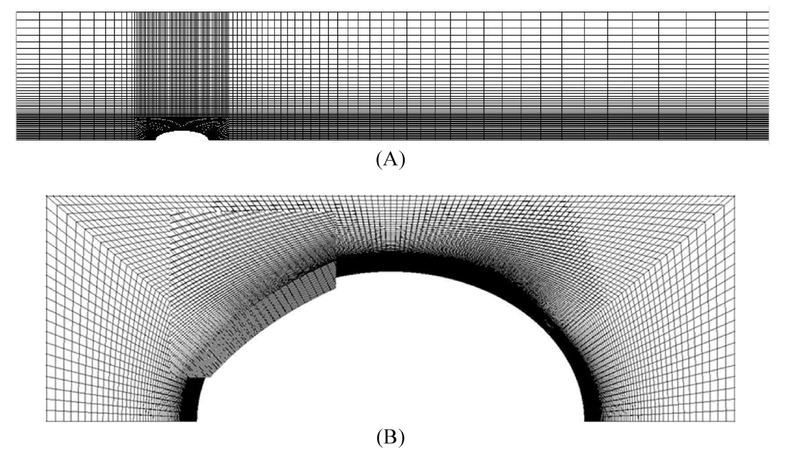
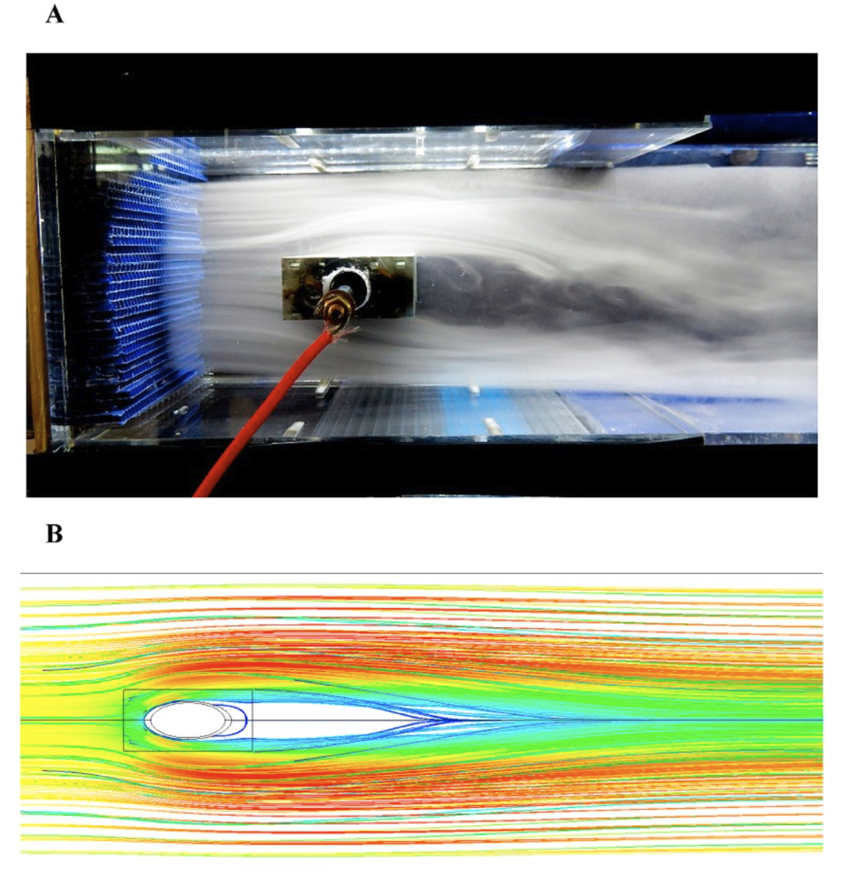
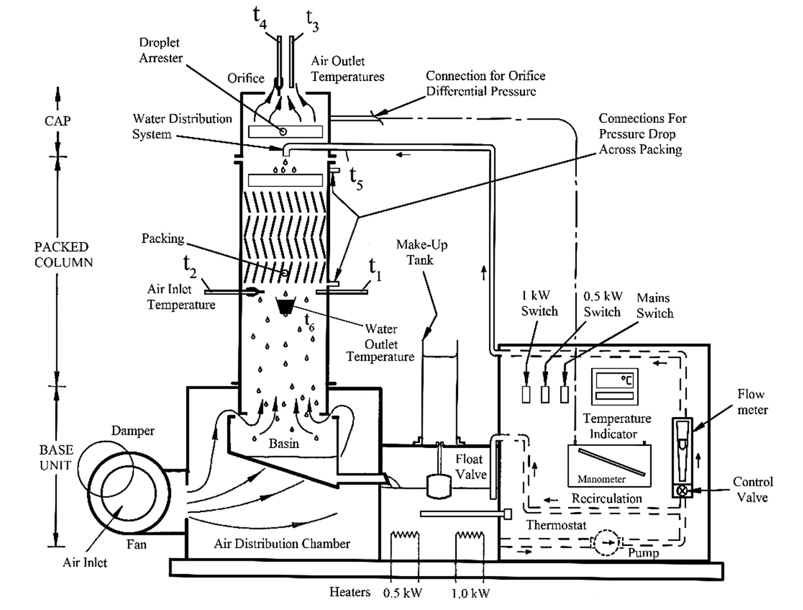
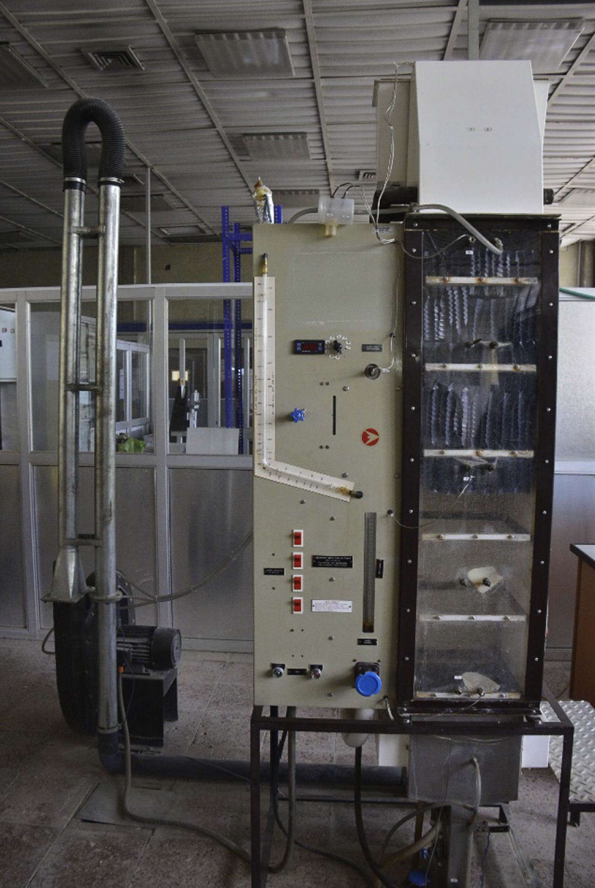
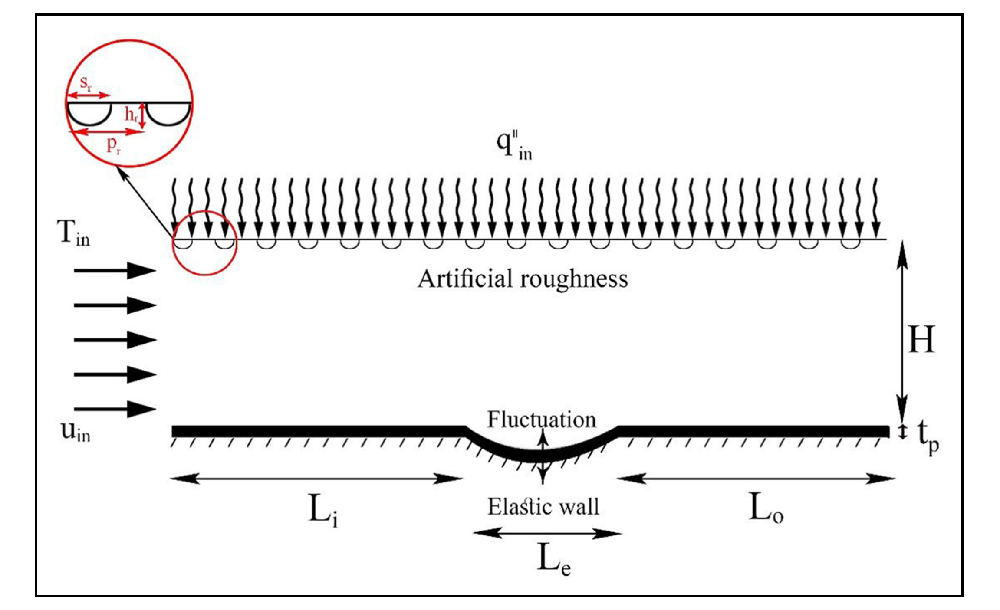
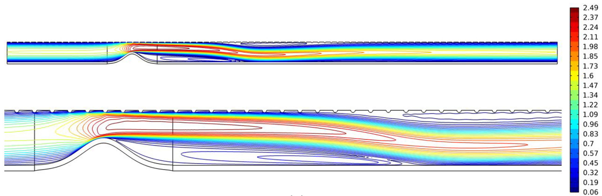
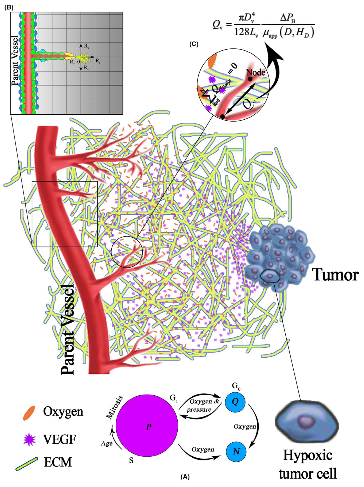
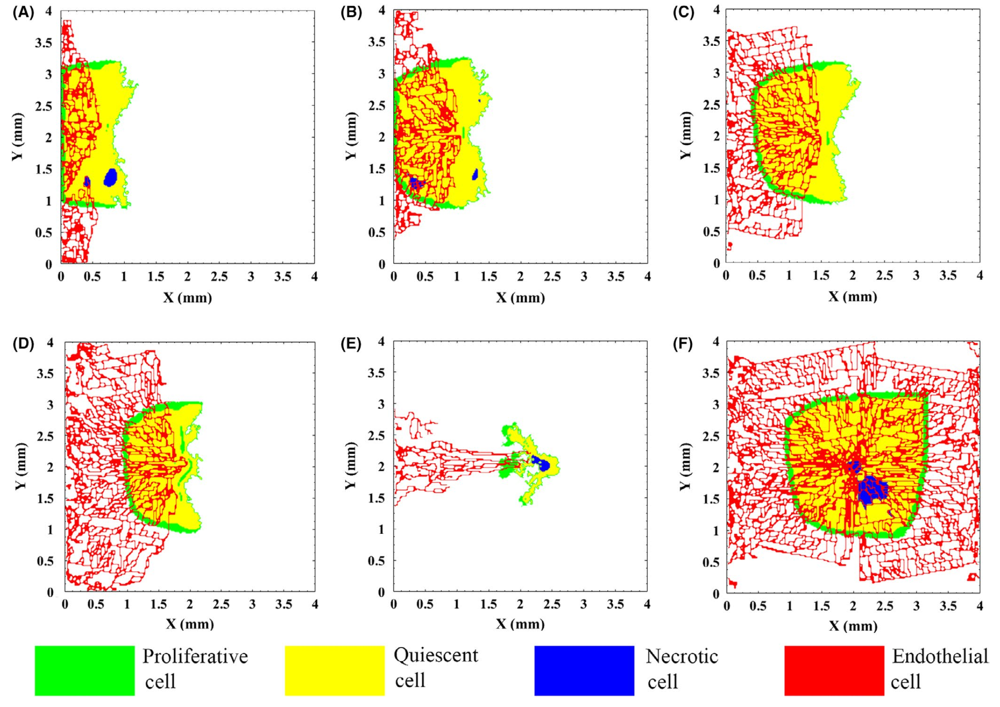
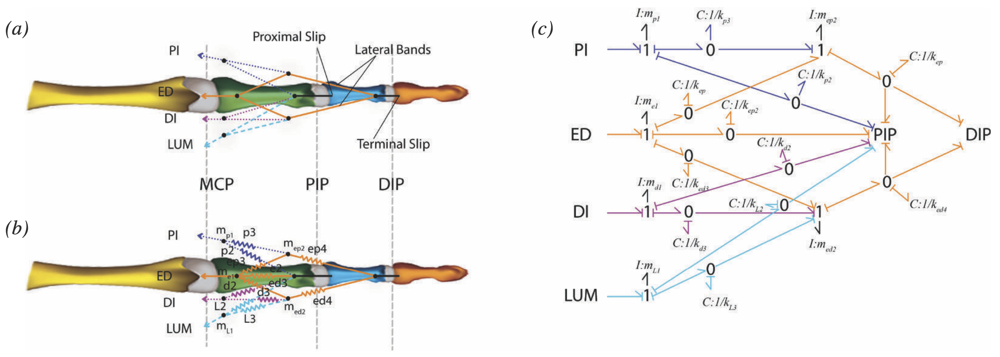
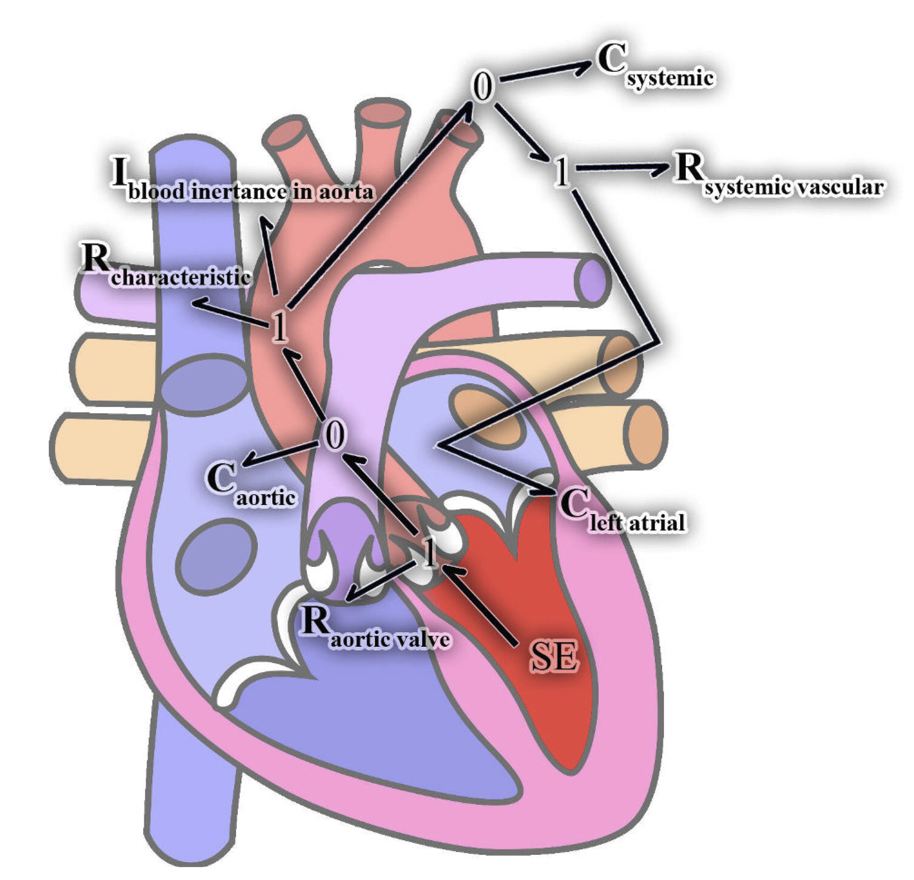

My Research
Thermodynamics, Heat Transfer and Fluid Flow
As one of the most important challenges facing the world today, energy efficiency has been a major focus of my research. My work has involved both computational and experimental investigations into improving energy utilisation and heat transfer. These projects have included examining how different cooling system configurations can improve efficiency, as well as how the arrangement and geometry of finned tubes can enhance heat transfer while reducing pumping requirements. My research has combined experimental investigations with computational simulations using established software packages and the development of in-house computer codes to model these phenomena. The findings have been published in international journals.
Experimental study and numerical simulation of thermal hydraulic characteristics of a finned oval tube at different fin configurations
I joined Aroa as an Operations Engineer after I finished my PhD. With a team of four engineers, we were responsible for the smooth operation of the company and production. Any issues arose, we were there to help resolve the issue. It included troubleshooting, root cause analysis, preparing the plan to fix the issue and when neeeded, modify the design of the equipment using SolidWorks to improve the procedure. We worked under ISO 19412 and every procedure must be followed and compatible with the ISO standard. Therefore, all changes, improvement and updates needed to go through a Quality management System.


The schematic of the meshed domain for the finned oval tube
A) The experimental observation of fluid flow over heated finned oval tube, B) Velocity contours over the finned oval tube
I have published two papers in this subject investigating the geometry of fins as well as arrangement of the finned tubes as a tube bundle. The links to the journal papers are provided below:
A comprehensive analysis of a laboratory scale counter flow wet cooling tower using the first and the second laws of thermodynamics
I joined Aroa as an Operations Engineer after I finished my PhD. With a team of four engineers, we were responsible for the smooth operation of the company and production. Any issues arose, we were there to help resolve the issue. It included troubleshooting, root cause analysis, preparing the plan to fix the issue and when neeeded, modify the design of the equipment using SolidWorks to improve the procedure. We worked under ISO 19412 and every procedure must be followed and compatible with the ISO standard. Therefore, all changes, improvement and updates needed to go through a Quality management System.


The schematic of the cooling tower used for study
The cooling tower used for study
The link to the journal paper is provided below:
Heat transfer enhancement in channels with roughened and elastic walls
I came with a new idea that using elastic walls with roughened surfaces could increase heat transfer in channels. The advantages of using elastic walls is to perturb the fluid flow and increase speed and furbulence to mix the fluid in the location where heat generation occurs.


The schematic of the upper roughened wall and elastic bottom wall
Velocity contour inside the channel when the elastic wall is moved inside the channel
The link to the journal paper is provided below:
Mathematical Modelling, Systems Biology and Tumor Growth
As a mechanical engineer, I have used my knowledge in mechanical engineering and coding skills to trun mathematical models of biological systems into computer simulations where we can observe the behaviour of our body and also diseases in diffeent scenarios inside our body. Like understanding how tumours grow inside our bdy, what affects their growth and how it can be controlled. Moreover, to understand how cells work to keep us alive and how ther interact with other cells. These are very interesting topics that can benefit science and human lives.
Mathematical modeling reveals how the density of initial tumor and its distance to parent vessels alter the growth trend of vascular tumors
I joined Aroa as an Operations Engineer after I finished my PhD. With a team of four engineers, we were responsible for the smooth operation of the company and production. Any issues arose, we were there to help resolve the issue. It included troubleshooting, root cause analysis, preparing the plan to fix the issue and when neeeded, modify the design of the equipment using SolidWorks to improve the procedure. We worked under ISO 19412 and every procedure must be followed and compatible with the ISO standard. Therefore, all changes, improvement and updates needed to go through a Quality management System.


The schematic of the tumour microenvironment
The vascular network at different tumour placement inside the tissue relative to the main vessel
I have published four papers in this subject investigating the tumour microenvironment. The links to the journal papers are provided below:
- Mathematical modeling reveals how the density of initial tumor and its distance to parent vessels alter the growth trend of vascular tumors
- Mathematical simulation and prediction of tumor volume using RBF artificial neural network at different circumstances in the tumor microenvironment
- A novel numerical and artificial intelligence based approach to study anti-angiogenic drugs: Endostatin
- A spatiotemporal multi-scale computational model for FDG PET imaging at different stages of tumor growth and angiogenesis
- Translational models of tumor angiogenesis: A nexus of in silico and in vitro models
The Automated Construction and Verification of Physically Plausible Models of Physiological Systems
I joined Aroa as an Operations Engineer after I finished my PhD. With a team of four engineers, we were responsible for the smooth operation of the company and production. Any issues arose, we were there to help resolve the issue. It included troubleshooting, root cause analysis, preparing the plan to fix the issue and when neeeded, modify the design of the equipment using SolidWorks to improve the procedure. We worked under ISO 19412 and every procedure must be followed and compatible with the ISO standard. Therefore, all changes, improvement and updates needed to go through a Quality management System.


The schematic of finger and its bond graph representation
Heart and the bond graph representation of blood flow though aorta
The link to the journal paper is provided below: